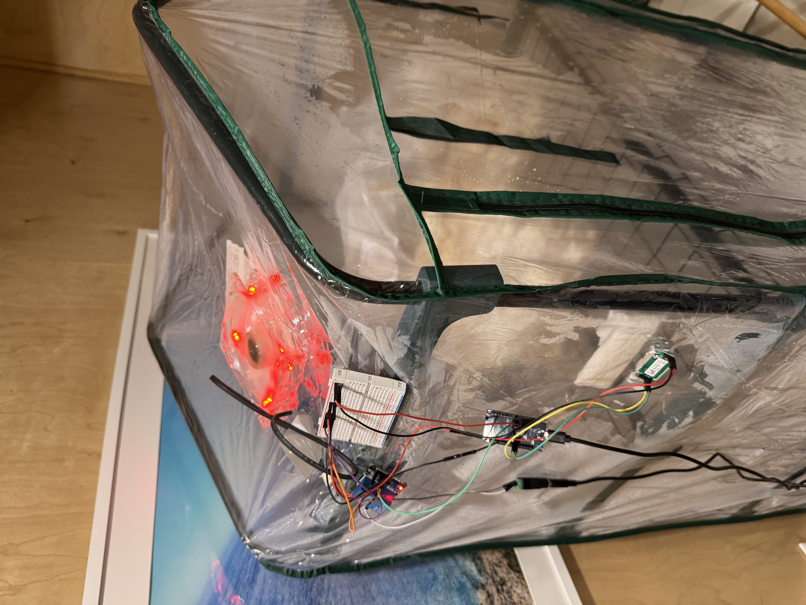
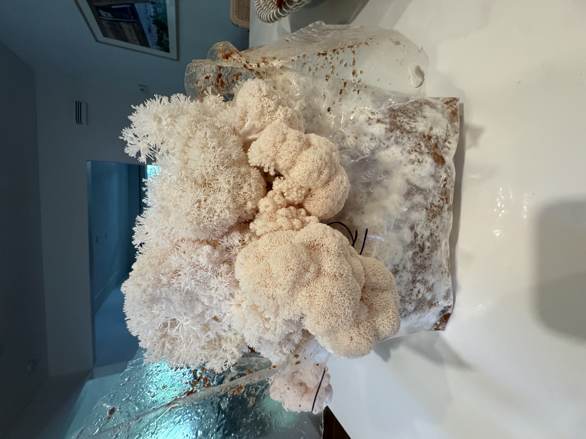

This project is a full-stack microcontroller system developed to automate and monitor conditions inside a mushroom fruiting tent. Designed specifically for Lion's Mane and King Oyster mushrooms, it dynamically controls airflow based on real-time sensor data.


🌐 Key Features
ESP32 Microcontroller — Low-power Wi‑Fi and Bluetooth-enabled chip for wireless telemetry and real-time control.
Firmware Development — Custom Arduino firmware written in C++ to interface with sensors, actuators, and cloud APIs.
Sensor Integration — Integrated a DHT11 sensor for humidity/temperature readings and MH‑Z19B for CO₂ measurement.
OLED Display Output — Real-time feedback provided via a 0.96" I²C OLED screen.
Relay-Controlled Exhaust Fan — Automated fan logic based on CO₂ levels (configurable thresholds for different mushroom species).
Cloud-Based Data Logging with ThingSpeak — Periodically publishes environmental data to ThingSpeak for remote visualization and analysis.
Web Dashboard with GitHub Pages — Live-updating web interface hosting data visualizations and project visuals.
🔧 Technical Highlights
Embedded Systems Programming (C++ / Arduino)
Internet of Things (IoT) architecture
Real-time sensor communication via I²C and UART
Cloud API integration (ThingSpeak)
GitHub Pages static site deployment
Breadboard prototyping + serial debugging
Power management between 3.3V and 5V rails
📊 CO₂ Thresholds
Lion's Mane: 800–1000 PPM
King Oyster: 600–800 PPM
Fan logic was tuned to maintain these ranges by activating airflow as needed.
Research project conducted along South Florida's waterways in collaboration with Miami Waterkeeper and International Seakeeper Society, focusing on environmental data analysis and GIS correlation studies. This work demonstrates my ability to develop research pipelines and analyze complex environmental datasets.
📋 Research Components
Python Data Pipelines — Developed automated systems to parse and process government septic tank databases
R Statistical Analysis — Used R programming for data correlation analysis and statistical modeling
GIS Data Integration — Correlated environmental data with geographic information systems
Nonprofit Collaboration — Worked with Miami Waterkeeper and International Seakeeper Society on environmental research
Technical Documentation — Comprehensive research paper and presentation materials
As an AI Engineer at Ghost Social, I contributed to both the core AI systems and platform growth strategy, combining machine learning development with SEO and marketing initiatives.
🔧 Technical Contributions
Built platform components that transform voice‑agent profiles into pre‑event match candidates.
Improved the voice‑intake pipeline with Python‑based NLP preprocessing to enhance transcription quality.
Tuned recommendation models to improve match accuracy under real‑time event constraints.
📈 SEO & Digital Marketing
Led search engine optimization (SEO) strategy and improved metadata for visibility.
Implemented digital marketing analytics to track engagement and conversions.
Forged strategic partnerships and co‑marketing collaborations with startups and community organizations.
🌐 Platform Features
7‑minute conversational voice intake for rich user profiling.
AI‑powered matching engine for compatibility prediction.